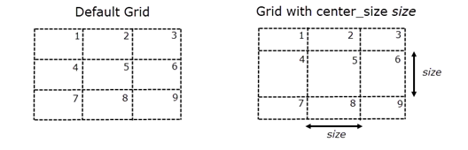

Grid-Based Partial Matching (Puzzle Matching)
Puzzle matching is only intended for debugging on a small area of the layout. It is not a substitute for pattern matching with appropriately defined pattern constraints. In particular, puzzle matching may not find all locations of a puzzle match if a suitable match candidate is not identified.
Puzzle matching is enabled in the CMACRO options string with the ‑puzzle_matcher option, which has this syntax:
The patterns used for puzzle matching must be exact TEM patterns with only Manhattan shapes and with an extent of at least 12 dbu by 12 dbu.
-puzzle_matcher ‘{’ match_criteria num_window tolerance [others other_tolerance] [fixed_center | center_coverage center_tolerance] [corner_coverage corner_tolerance] [center_size size] [fixed_layer ‘{’ layer_name … ‘}’] [no_overlap] ‘}’
match_criteria num_window tolerance — Required parameters that specify the criteria for a puzzle match:
num_window — The minimum number of windows that must match within the specified tolerance in order to qualify the layout region as a puzzle match.
If center_coverage and/or corner_coverage is specified, windows that are matched for those options do not contribute to the num_window match count. The maximum num_window value depends on the options center_coverage and corner_coverage:
neither option: 1 <= num_window <= 9
center_coverage: 1 <= num_window <= 8
corner_coverage: 1 <= num_window <= 5
corner_coverage and center_coverage: 1 <= num_window <= 4
If an invalid num_window value is used, a run-time error message is issued and the run is aborted.
tolerance — The area tolerance for a match within each window, specified as a value from 0 to 1, where a value of 1 indicates a 100% match. The tolerance is compared to the match_value per window, calculated as
1 - |Area(pattern_layer) - Area(design_layer)|/Area(window)In order for a window to qualify as a match, the window’s match value for each pattern layer must meet the tolerance value.
See the section “Using the center_coverage, corner_coverage, others, and fixed_center Options” for details on using those options to define more precise control of the area tolerance.
others other_tolerance — The area tolerance for the windows that are not counted toward the “num_window tolerance” criteria. By default, other_tolerance is zero.
For example, {match_criteria 5 0.8 others 0.5} specifies that 5 windows must match with 0.8 area tolerance and the remaining 4 windows must match with 0.5 area tolerance.
fixed_center — Specifies that the center window of the grid must match exactly.
May not be specified with center_coverage.
center_coverage center_tolerance — Specifies the area tolerance for the center window as a value from 0 to 1. The center window must match within the center_tolerance for the layout region to qualify as a puzzle match. See tolerance for the definition of area tolerance.
For example, the center_coverage option can be used to specify a higher area tolerance for the center window:
-puzzle_matcher {match_criteria 5 0.85 center_coverage 0.95}A puzzle match must have the center window match at 95%, and 5 other windows match at 85%.
corner_coverage corner_tolerance — Specifies the area tolerance for the corner windows as a value from 0 to 1. All four corner windows must match within the corner_tolerance for the layout region to qualify as a puzzle match. See tolerance for the definition of area tolerance.
For example, the corner_coverage option can be used to specify a lower area tolerance for the corner windows:
-puzzle_matcher {match_criteria 3 0.95 corner_coverage 0.5}A puzzle match must have the 4 corner windows match at 50%, and 3 other windows match at 95%.
center_size size — Specifies that the center window of the grid is of width and height size in user units. The default is to use a grid of nine approximately equal windows.
Figure 1. Grid for Puzzle MatchingThe size should be less than or equal to half the pattern extent in either direction for accurate operation. A warning is issued if this recommendation is not met.
An error occurs if the size value is greater than or equal to the pattern extent in either direction for any pattern in the library.
fixed_layer ‘{’ layer_name … ‘}’ — Specifies a list of one or more pattern layers that must match exactly in all windows.
no_overlap — Specifies to choose the best match from overlapping puzzle matches in a region. See “Using no_overlap to Eliminate Overlapping Matches”.
The default is to output all qualified puzzle matches.
Basic Example
Consider the following pattern and layout region to be checked with grid-based puzzle matching:
The pattern extent is divided into nine windows, taking into account the optional center_size specification. The match value is calculated for each window as follows:
match_value = 1 - |Area(pattern_layer) - Area(design_layer)|/Area(window)A layout region is considered a puzzle match if the following is true:
At least one window containing a pattern edge or vertex is an exact match (satisfied by windows 1, 4, and 5 in the preceding figure).
At least num_window windows have a match_value greater than or equal to tolerance. Windows that are empty in both the pattern and design have a match_value of 1.
If fixed_center is specified, the center window must be an exact match.
If fixed_layer is specified, the specified layers must match exactly in all windows.
When using puzzle matching, the compiled pattern must include matched layer marker output, which can be added when the pattern is compiled. See “Setting Up and Running Partial Matching”. Unlike in standard pattern matching, the matched layer marker output is the XOR of the pattern layer and the design layer in the region of the puzzle match.
The following CMACRO call and rule check are used with the pattern and layout shown in Figure 2. The compiled pattern library my_lib has only one marker output—the matched layer marker which is written to the derived layer xor_out.
CMACRO pm::my_lib design_layer "-puzzle_matcher {match_criteria 7 0.8}"
xor_out
match_xor {COPY xor_out}The match_criteria specifies that at least 7 windows must have a match_value of 0.8 or greater. For the pattern and layout in the example, all but two windows (6 and 9) are an exact match, so puzzle matching returns a match. For this example, the match value for windows 6 and 9 is not relevant. The results of the rule check match_xor contain the XOR difference between the pattern layer and the design layer, as shown in Figure 2.
Reducing False Matches
The options fixed_center and center_size can be used to reduce the possibility of false matches, especially when the tolerance and/or num_window values are small.
For example, consider the pattern and layout region shown in the following figure. The CMACRO options string was “-puzzle_matcher {match_criteria 7 0.5}”, where the tolerance value of 0.5 is low, allowing the pattern to match in a flipped placement to a mostly empty layout region.

False partial matches such as the one in the preceding figure can be reduced with high tolerance values, high num_window values, and the use of the fixed_center option. Using the CMACRO options string “-puzzle_matcher {match_criteria 7 0.8 fixed_center}”, the layout region shown in the preceding figure is not a puzzle match.
Using the center_coverage, corner_coverage, others, and fixed_center Options
The options center_coverage, corner_coverage, others, and fixed_center provide precise control of the area tolerance for puzzle matching. Several examples are given.
Example 1: A puzzle match must have the center window match at 95%, and 5 remaining windows match at 85%:
-puzzle_matcher {match_criteria 5 0.85 center_coverage 0.95}Example 2: A puzzle match must have the center window match at 95%, the four corner windows match at 25%, and two remaining windows at 75%:
-puzzle_matcher {match_criteria 2 0.75 center_coverage 0.95 corner_coverage 0.25}Example 3: A puzzle match must match four windows at 80%, including an exact match to the center window. When using fixed_center, a matched center window counts toward the total num_window count. The other five windows must match at 50%.
-puzzle_matcher {match_criteria 4 0.8 fixed_center others 0.5}Example 4: This specification causes a runtime error because corner_coverage is specified and num_window is greater than five:
-puzzle_matcher {match_criteria 6 0.75 corner_coverage 0.25}The error begins with “Error DECRYPT4 on encrypted line …”.
Using no_overlap to Eliminate Overlapping Matches
It is possible for multiple, overlapping matches to be made in the same region of the layout. Use the no_overlap option to return only the best match when overlapping matches are found.
The layout and a pattern are shown in the following figure.
The pattern is compiled with count markers and matched layout marker output:
pdl_lib_mgr compile input one_pat.pmdb output one_pat.svrf \
marker Marker1 matched layer 1 \
enable_runtime_options gen_count_layer > compile.logThe SVRF rule file has the following CMACRO statement with no_overlap, and outputs the count marker and XOR match results:
CMACRO pm:one_pat met4 "-puzzle_matcher {match_criteria 7 0.85
no_overlap}" xor_met4 count_marker
xor_met4 {COPY xor_met4}
count_marker {COPY count_marker}With no_overlap, only one match is returned in the layout region, as shown in the image on the left. If the CMACRO does not include no_overlap, two matches are returned, as shown in the image on the right. The count markers do not overlap, but the match results overlap and merge.